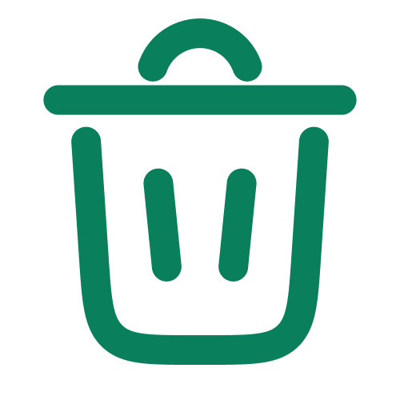

Tips to recycle Organic waste
- Recycling organic waste, such as food scraps and yard waste, is an important step in reducing the amount of waste that ends up in landfills. Here are some steps you can take to recycle organic waste:
- Collect organic waste: Collect all the organic waste you want to recycle, such as food scraps, yard waste, and other compostable materials. Keep in mind that some materials, such as meat and dairy products, should not be included in the compost pile.
- Create a compost pile: Choose a spot in your yard or create a compost bin to hold your organic waste. Start by adding a layer of dry leaves or yard waste to the bottom of the pile.
- Keep track of your progress to help you reach your goals. Use your phone, a printed log, online tracker, app, or other device to record your weight, what you eat and drink, and how long you are active.
- Add organic waste: Add your organic waste to the compost pile. Be sure to mix in both "brown" materials like dried leaves and "green" materials like food scraps to balance the carbon to nitrogen ratio.
- Turn the pile: Use a garden fork or shovel to turn the compost pile every few weeks. This helps to aerate the pile and speed up the composting process.
- Monitor moisture: Keep the compost pile moist, but not too wet. If the pile is too dry, add water. If it's too wet, add more dry materials like leaves. Wait for compost: Over time, the organic waste will break down into compost. This process can take anywhere from a few months to a year, depending on the size of the pile and the conditions. Use compost: Once the compost is ready, use it as a natural fertilizer for your garden or plants. You can also mix it into soil to improve its quality.
- Remember to always follow your local guidelines and regulations for composting, as some areas may have restrictions on what can be composted and how.